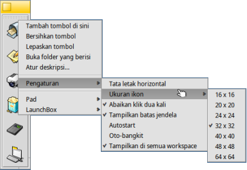

(Kotak peluncur) LaunchBox
(Kotak peluncur) LaunchBox
| Deskbar: | ||
| Lokasi: | /boot/system/apps/LaunchBox | |
| Pengaturan: | ~/config/settings/LaunchBox/* |
Satu atau lebih applet LaunchBox dapat mulai mengatur pintasan ke aplikasi atau dokumen favorit Anda. Anda memutuskan apakah masing-masing ditampilkan pada semua atau hanya ruang kerja saat ini. Mereka juga dapat berfungsi untuk dengan cepat membuka dokumen dalam aplikasi tertentu. Misalnya, Anda dapat drag & drop file HTML ke editor teks di LaunchBox untuk membukanya di editor alih-alih aplikasi yang disukai, browser.
Semua opsi dicapai dari menu konteks:
| Menambah tombol kosong. | |||
| Mengosongkan tombol. | |||
| Menghapus tombol. | |||
| Melayang mouse di atas ikon menunjukkan tooltip dengan nama file dan, dalam kasus aplikasi, deskripsi singkatnya jika berbeda dari namanya (lihat topik FileTypes). Dengan item menu ini Anda dapat menyesuaikan deskripsi untuk tooltip ini. | |||
Sejajarkan tombol secara horizontal. Mengatur ukuran ikon antara 16 dan 64 piksel. Luncurkan objek hanya sekali, bahkan ketika Anda (secara tidak sengaja) mengklik dua kali. Menunjukkan batas jendela. Mulai LaunchBox secara otomatis saat boot-up. LaunchBox muncul jika mouse berada di dekat tepi layar. Memperlihatkan LaunchBox di setiap workspace. | |||
Tambah pad baru. Duplikasi pad ini. Tutup pad ini. | |||
Keluar semua dari pad LaunchBox. |